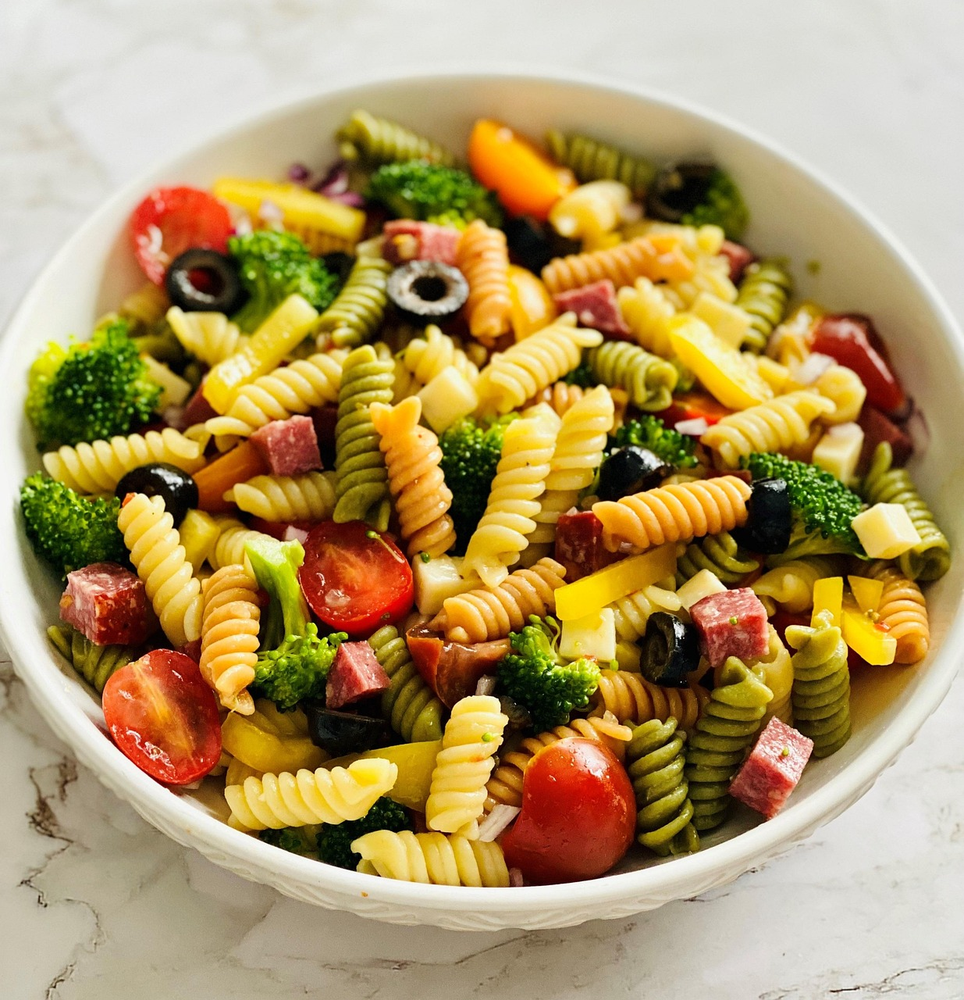

Home
Pasta salad

Description
This vibrant pasta salad is a perfect blend of fresh flavors and
satisfying textures. Tender pasta is tossed with crisp vegetables,
juicy cherry tomatoes, and a zesty homemade dressing that ties everything
together. Whether served as a refreshing side dish for picnics and barbecues
or enjoyed as a light main course, this pasta salad is bursting with color,
flavor, and wholesome goodness.
Ingredients
- 1 pound tri-colored spiral pasta
- 1 (16 ounce) bottle Italian-style salad dressing
- 6 tablespoons salad seasoning mix
- 2 cups cherry tomatoes, diced
- 1 green bell pepper, chopped
- 1 red bell pepper, diced
- ½ yellow bell pepper, chopped
- 1 (2.25 ounce) can black olives, chopped
Steps
- Gather all ingredients.
- Bring a large pot of lightly salted water to a boil. Cook pasta in the
boiling water, stirring occasionally, until tender yet firm to the bite,
about 10 to 12 minutes; rinse under cold water and drain.
- Whisk Italian dressing and salad spice mix together until smooth.
Combine pasta, tomatoes, bell peppers, and olives in a salad bowl.
- Pour dressing over salad and toss to coat.
- For the best flavor, refrigerate the pasta salad for 8 hours to overnight.